Мастерская «АС»
С 2000 года мастерская «АС» производит бильярдные кии ручной работы. Сегодня это бренд с собственным именем, которому доверяют игроки и коллекционеры.
Кии-шедевры ручной работы
Признание
Когда мастерская только начиналась, никто не предполагал, что кии «АС» будут сопоставимы по стоимости с бильярдным столом, а клиенты станут не только покупать их, но и коллекционировать. Сегодня «АС» — это лучшие кии для пирамиды ручной работы.
Ассортимент
В зависимости от древесины и сложности изготовления мы выпускаем огромный ассортимент во всех ценовых категориях — от рядовой модели до коллекционного эксклюзива. Применяемые технологии удовлетворяют самые смелые пожелания игроков.
Сервис
Изготовим кий любого размера и массы, доставим по всей территории СНГ. И широчайший сервис после покупки: ремонт любой части — от наклеек и замены чашек до изменения длины, веса или замены шафта. Мы никогда не отказываемся от своей продукции.
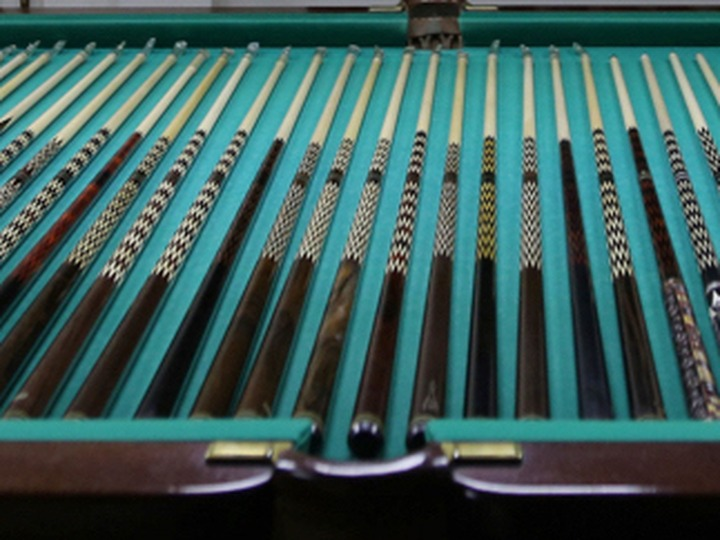
26 лет в ремесле
С 2000 года и неизменный состав мастеров. Опыт, который чувствуется в каждом ударе.
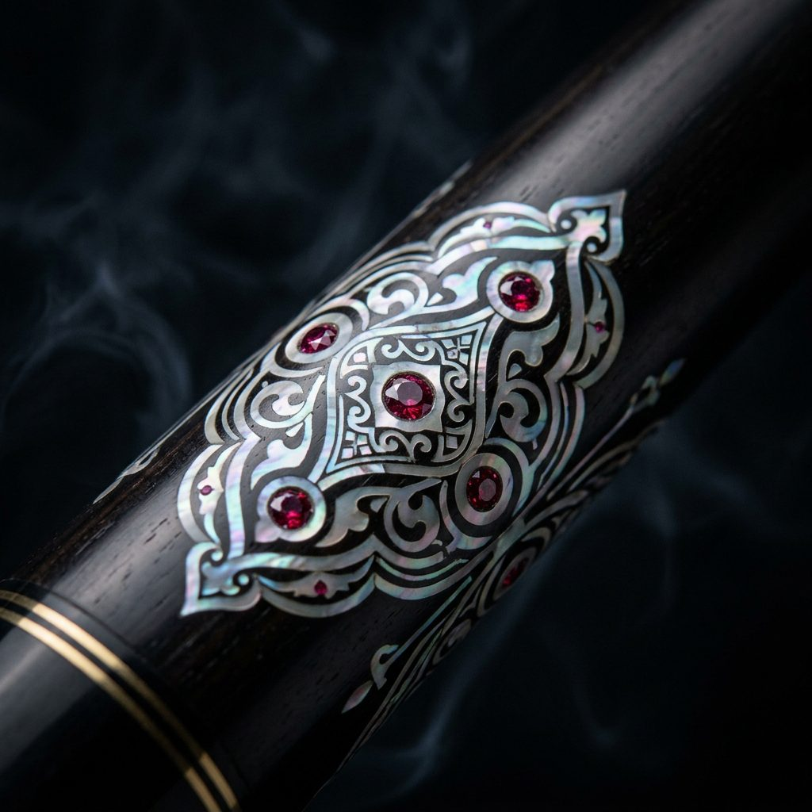
Эксклюзив
Инкрустация серебром, перламутром и камнями. Каждый кий — в единственном экземпляре.
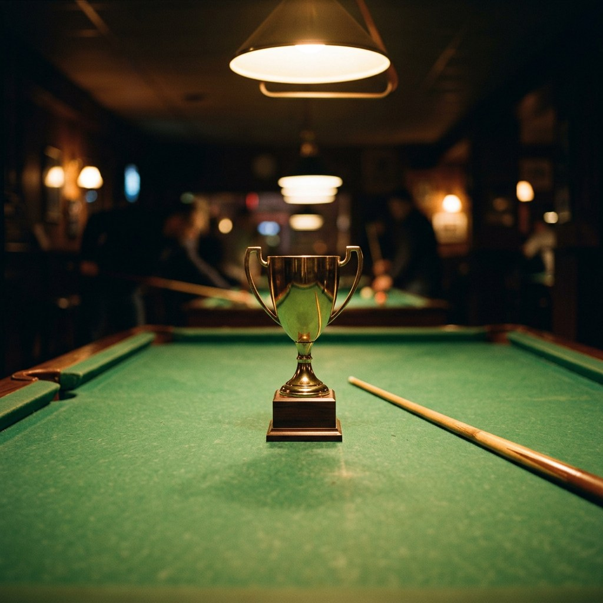
Выбор чемпионов
Нашими киями выигрывают чемпионаты мира, Европы и Украины.
Киями «АС» играют чемпионы
Лучшее доказательство уровня мастерской — игроки, которые выбирают наши кии для большого спорта.
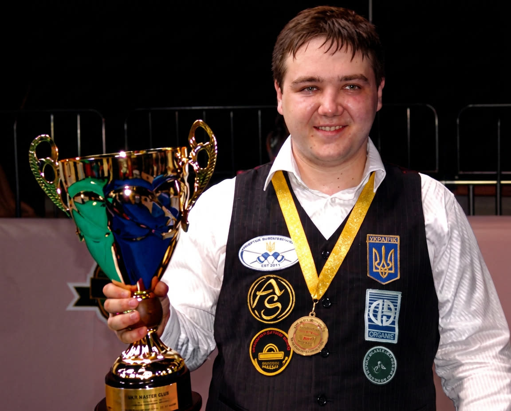
- Мастер спорта международного класса.
- Обладатель Кубка Кавказа 2004 г. (Тбилиси, Грузия)
- Бронзовый призер командного Кубка Мира 2005 г. (Калининград, Россия)
- Чемпионат Европы 2006 г. (Каунас, Литва)
- Чемпионат Европы 2007 г. (Кишинев, Молдова)
- Наивысшее спортивное достижение: двукратный абсолютный чемпион Украины по бильярду (2002 и 2003 гг.), серебряный призёр чемпионата Европы по «Пирамиде» (2004 г.)
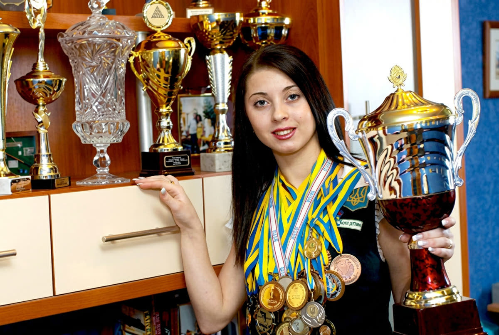
- 2-х кратная Чемпионка Европы, серебряная призёрка Чемпионата Мира,
- 8-ми кратная Чемпионка Украины, 2-х кратная обладательница Кубка Украины,
- Абсолютная Чемпионка Украины, Мастер Спорта Международного Класса.
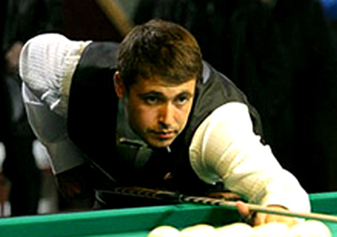
Мастер спорта международного класса. Многократный чемпион Украины. Чемпион Европы и Азии 2005 года, чемпион мира 2003 года. Председатель Одесской областной Федерации бильярдного спорта.
- многократный чемпион Украины;
- серебряный призер Чемпионата мира 2001 г;
- чемпион Кубка Азии 2002 г;
- серебряный призер Чемпионата Европы 2002 г;
- бронзовый призер Кубка Балтии 2002 г;
- чемпион мира 2003 г;
- бронзовый призер Чемпионата Европы 2003 г;
- серебряный призер Кубка Балтии 2003 г;
- серебряный призер Рождественского Кубка Чемпионов 2004 г (ФРБ);
- чемпион Кубка Азии 2005 г; Бронзовый призер Кубка Европы 2005 г.
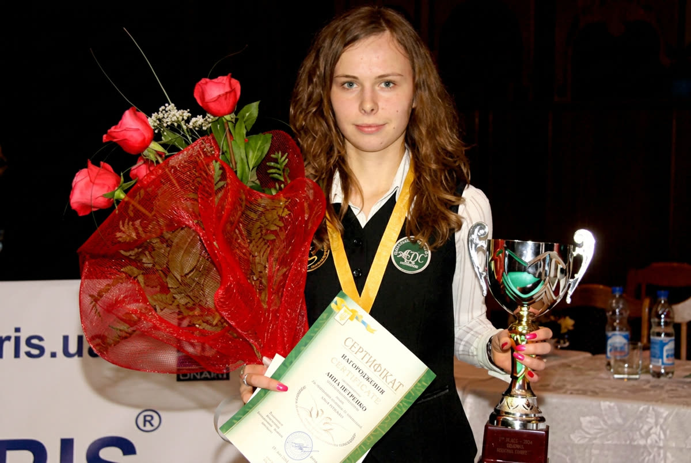
- Одна из сильнейших игроков в бильярде среди женщин.
- Мастер спорта
- Серебряный призер Чемпионата Мира 2007 (Киев, Украина).
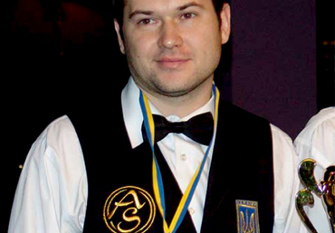
- 25 место — Чемпионат мира 2005 г. (Алматы, Казахстан)
- 2 место — Чемпионат мира 2004 г. (Москва, Россия)
- 9-16 место — Независимость Украины 2005 г. (Харьков, Украина)
- 24 место — Чемпионат Европы 2002 г. (Минск, Беларусь)
- 7-8 место — Кубок Балтии 2002 г. (Калининград, Россия)
- 5-7 место — Кубок Балкан 2004 г. (Кишинев, Молдова)
- 10-12 место — Кубок Европы 2005 г. (финал: Минск, Беларусь)
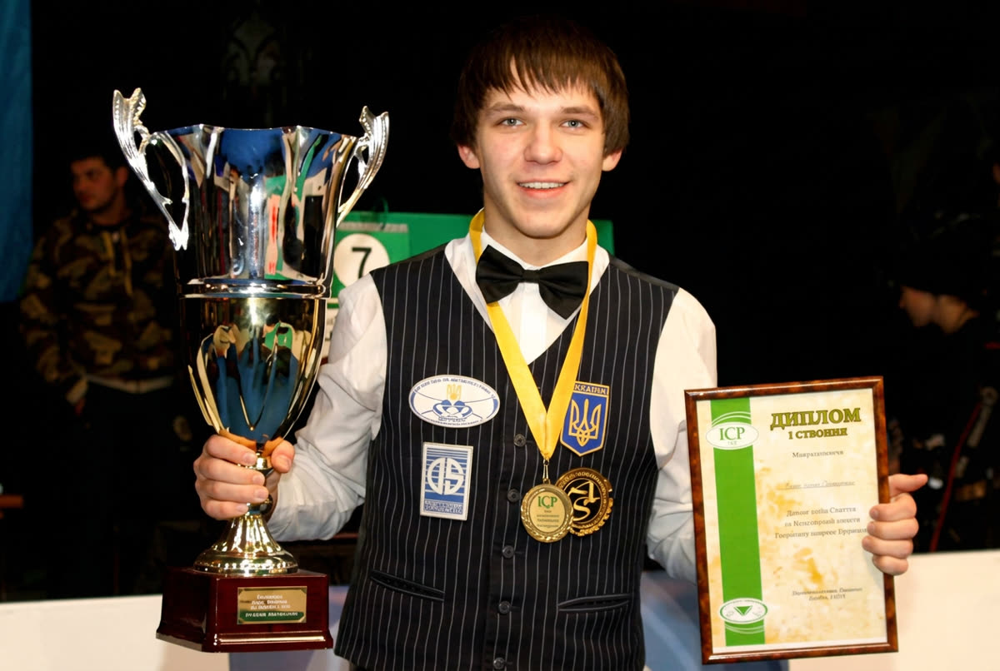
На сегодняшний день это самый интересный и непредсказуемый игрок в мире бильярда. Громко заявил он о себе в 2007 году в серии турниров Гран-При городов Евразии, где несмотря на свой молодой возраст легко и интересно добирался до финалов турниров, где в ошеломительной борьбе проигрывал, но оставлял о себе незабываемое впечатление.
15 апреля в С-Петербурге состоялся очередной тур международного турнира по «Динамичной Пирамиде» — «Великолепная Восьмёрка — 2008». Победу с явным преимуществом одержал украинский спортсмен.
Ярослав Тарновецкий выступает под патронатом Днепропетровской фирмы «Динарис» и играет кием производства «AS», восьмигранная «Корона» (Эбен).
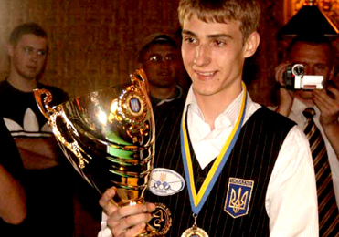
- Молодой спортсмен, хорошо зарекомендовавший себя в серии турниров Гран-При городов Евразии.
- Многократный чемпион Украины.
- Мастер спорта.
- Серебряный призер Кубка Европы 2005 г. (финал: Минск, Беларусь).
- Серебряный призер Кубка Европы 2007 г. (финал: Днепропетровск, Украина)
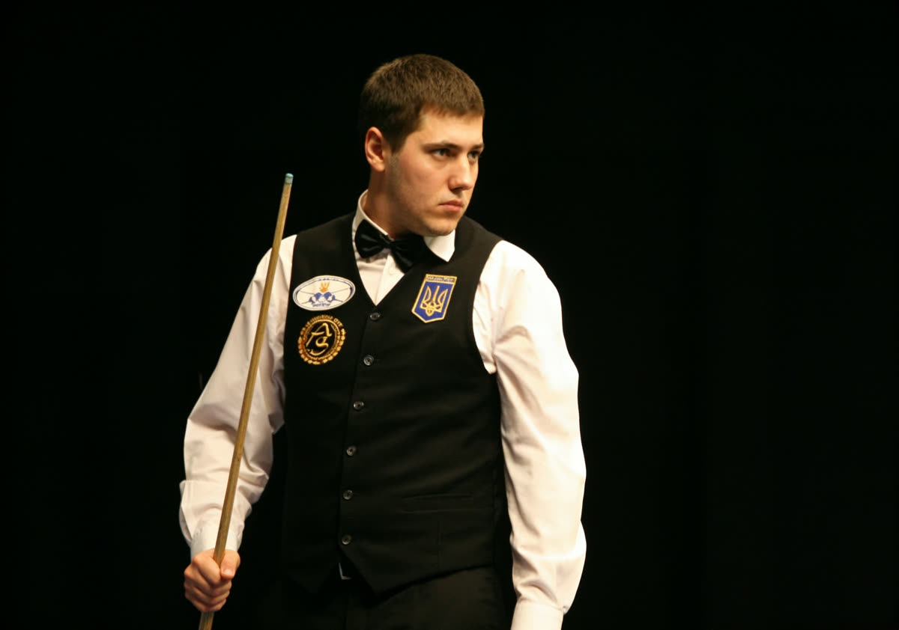
- 9-16 место — Кубок Европы 2006 г. (финал: Николаев, Украина)
- Наивысшее положение в турнирном рейтинге: 25 место в декабре 2007
Закажите свой первый кий «АС»
Расскажите о своей игре — менеджер подскажет модель, дерево и баланс.